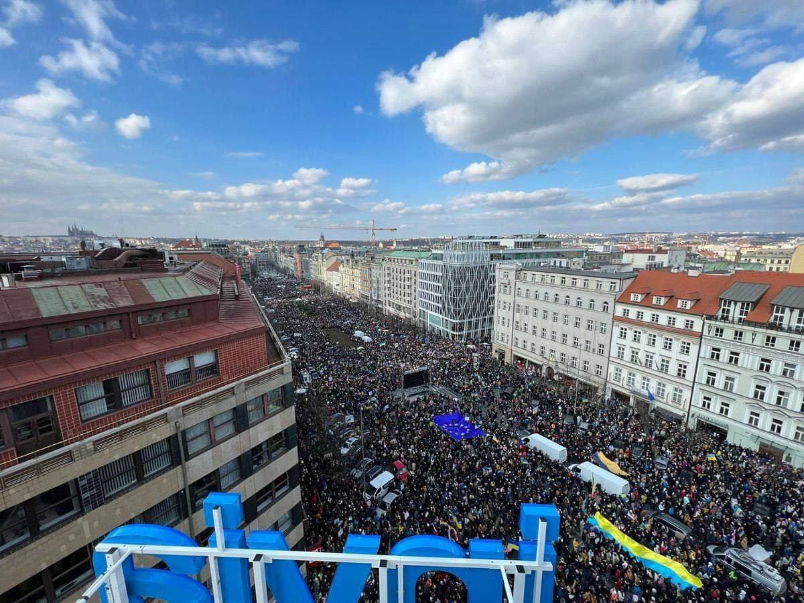
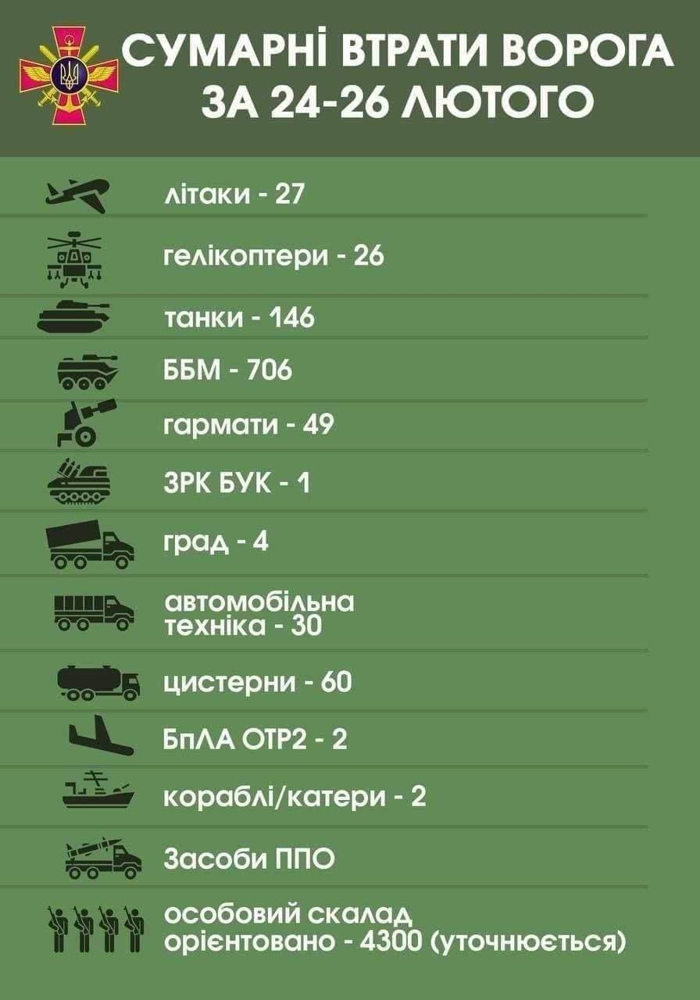
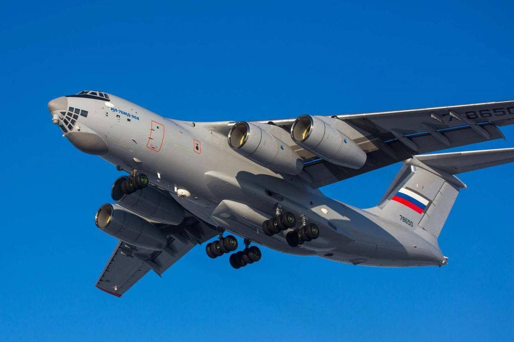
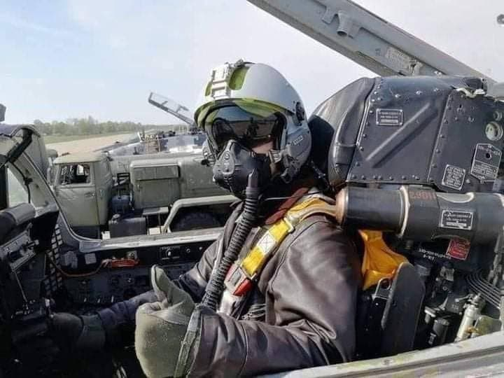

Початок роботи 09:10

Весь світ підтримує Україну! В очах усього світу Росія - агресор та окупант! Весь світ закликає Путіна зупинитися.
З Хорватії до України воювати проти російської армії вирушають перші добровольці «За кілька днів до української армії має приєднатися велика група доброволців. Вони мають попередній військовий досвід, сповнені духу та бажання допомогти українській армії» - пише репортер хорватського телеканалу Nova TV Іван Чоркало.


Норвегія виділить 226 млн. доларів на гуманітарну допомогу Україні — постпред Норвегії в РБ ООН
Міністерство оборони України та світова айті-спільнота пропонують російським військовим здатися, отримати амністію та заробити, - заявила Маша Єфросиніна
Канада поставить Україні нелетального озброєння на $19,6 млн, — глава МЗС країни.

Кінець роботи 10:40"